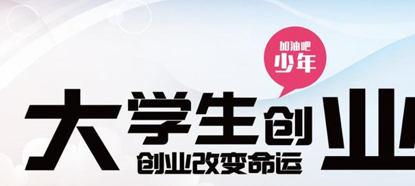

又到了大学上毕业的日子了，四年美好的大学时光离去，又到了分别的日子！一部分大学生朋友已经踏上就业的旅途，另外一部分大学生朋友在着手或者已经创业。有许多创业的大学生朋友在问小编，浙江大学生创业有没有什么优惠政策，有没有什么对于大学毕业生创业上的政策扶持呢？小航这里就给大家介绍一个相关政策解读，可供参考！

1. 创业培训补贴
享受主体：在校大学生和高校毕业生
政策内容：培训补贴（标准各地自定）。其中参加优秀创业者能力提升培训的，最高每人每年补贴1万元。
享受条件：在经人力社保部门认定的定点机构参加创业培训。
政策依据：浙政发〔2015〕21号、浙委办发〔2017〕46号
2. 个人创业担保贷款及贴息
享受主体：在校大学生和毕业5年以内高校毕业生
政策内容：创办个体工商户（含经认定的网络创业），不超过30万元，合伙经营或创办企业的，可适当提高贷款额度，并给予全额贴息。
享受条件：创办个体工商户（含经认定的网络创业）或企业
政策依据：浙政发〔2015〕21号
3. 小微企业创业担保贷款及贴息
享受主体：小微企业
政策内容：按每人不超过20万元的标准发放创业担保贷款（总额不超过300万元）。对入驻科技孵化器、经人社保部门认定的创业孵化基地的小微企业给予全额贴息，对其他企业50%贴息，贴息标准按基础利率执行，贴息期限不超过3年。
享受条件：招用重点人群（指在校大学生和毕业5年以内高校毕业生、登记失业半年以上人员、就业困难人员、城镇复退军人、持证残疾人）达到企业现有在职职工总数20%以上（超过100人的企业达到10%以上），与之签订1年以上劳动合同并依法缴纳社保。
政策依据：浙委办发〔2017〕46号、浙政发〔2015〕21号、浙政发〔2017〕41号
4. 一次性创业补贴
享受主体：在校大学生和毕业5年以内高校毕业生
政策内容：补贴条件和标准各地自定。其中初次创办养老、家政服务和现代农业企业,并担任法定代表人或主要负责人的，给予企业连续3年的创业补贴，补贴标准为第一年5万元，第二年3万元，第三年2万元。
享受条件：初次创办企业
政策依据：浙委办发〔2017〕46号
5. 创业孵化补贴
享受主体：创业孵化基地、创业孵化企业
政策内容：按孵化实际成效给予创业孵化补贴（具体补贴标准各地自定）。被认定为省级创业孵化示范基地的，按孵化数量及成效给予每家最高30万元的一次性奖补。
享受条件：提供创业孵化服务
政策依据：浙委办发〔2017〕46号、浙政发〔2017〕41号
6. 租金补贴
享受主体：在校大学生和毕业5年以内高校毕业生
政策内容：有条件的地方可给予租金补贴（具体补贴标准各地自定）
享受条件：租用经营场地创业
政策依据：浙政发〔2015〕21号
7. 创业带动就业补贴
享受主体：在校大学生和毕业5年以内高校毕业生
政策内容：带动3人就业的每年补贴2000元；超过3人的每增加1人再给予1000元补贴，每年最高不超过2万元，补贴期限不超过3年。其中从事农村电商创业的，补贴标准可上浮20%。
享受条件：创业带动3人以上就业并交纳社保费1年以上
政策依据：浙政发〔2015〕21号
8. 创业项目补贴
享受主体：高校毕业生
政策内容：对全省创业大赛优胜者和优秀创业项目进行补贴（具体补贴标准各地自定）
享受条件：由各地自行确定
政策依据：浙政发〔2015〕21号
浙江省在激活大学生创业创新活性上保持着先进的思想理念，，中国第5届“互联网+”大学生创新创业大赛也将由浙江大学承办，期待在未来有更多的优秀企业从浙江省走出来。
收起